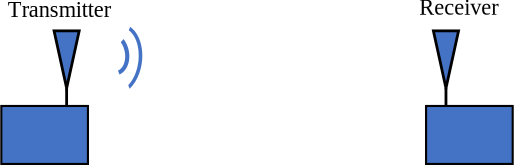
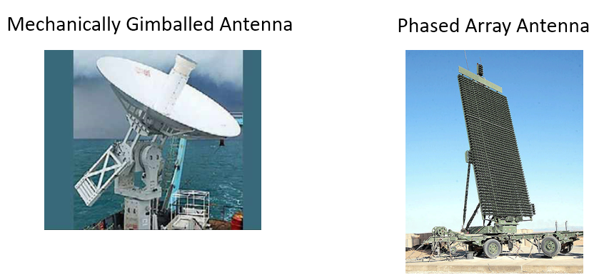
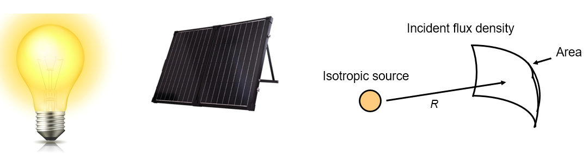
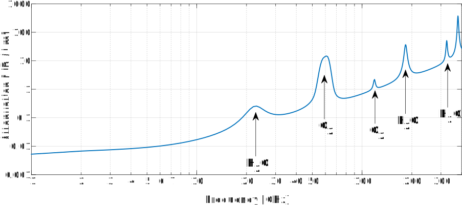

9. Bilans de liaison¶
Ce chapitre couvre les bilans de liaison, dont une grande partie consiste à comprendre la puissance d’émission/réception, l’atténuation due au trajet, le gain d’antenne, le bruit et le rapport signal à bruit. Nous terminons par la construction d’un exemple de bilan de liaison pour l’ADS-B, qui sont des signaux transmis par les avions commerciaux pour partager entre autres leur position.
Introduction¶
Un bilan de liaison est une comptabilité de tous les gains et pertes de l’émetteur jusqu’au récepteur dans un système de communication. Les bilans de liaison décrivent une direction de la liaison sans fil. La plupart des systèmes de communication étant bidirectionnels, il doit y avoir un budget distinct pour la liaison montante et la liaison descendante. Le “résultat” du bilan de liaison vous indique approximativement le rapport signal à bruit (abrégé RSB en français SNR pour “signal to noise ratio” en anglais) que vous devez vous attendre à avoir au niveau de votre récepteur. Une analyse plus approfondie sera nécessaire pour vérifier si ce SNR est suffisamment élevé pour votre application.
Nous étudions ici les bilans de liaison non pas dans le but d’être capable de réaliser un bilan de liaison pour une situation donnée, mais pour apprendre et développer une approche système des communications sans fil.
Nous traiterons d’abord du bilan de puissance du signal reçu, puis du bilan de puissance du bruit, et enfin nous combinerons les deux pour trouver le SNR (puissance du signal divisée par la puissance du bruit).
bilan de puissance du signal¶
La figure ci-dessous montre le schéma le plus élémentaire d’une liaison sans fil générique. Dans ce chapitre, nous nous concentrerons sur une direction, c’est-à-dire d’un émetteur (Tx) à un récepteur (Rx). Pour un système donné, nous connaissons la puissance d’émission ; il s’agit généralement d’un paramètre de l’émetteur. Comment déterminer la puissance reçue au niveau du récepteur ?
Nous avons besoin de quatre paramètres système pour déterminer la puissance reçue, qui sont indiqués ci-dessous avec leurs abréviations courantes. Ce chapitre examinera en détail chacun d’entre eux.
- Pt - puissance d’émission
- Gt - Gain d’antenne d’émission
- Gr - Gain d’antenne de réception
- Lp - Distance entre la Tx et la Rx (c.-à-d., combien de perte dû au chemin sans fil)
Puissance d’émission ¶
La puissance d’émission est assez simple; il s’agit d’une valeur en watts, dBW ou dBm (rappelons que dBm est l’abréviation de dBmW). Chaque émetteur possède un ou plusieurs amplificateurs, et la puissance d’émission est principalement fonction de ces amplificateurs. Une analogie pour la puissance d’émission serait la puissance d’une ampoule électrique: plus cette puissace est élevée, plus l’ampoule transmet de lumière. Voici des exemples de puissance d’émission approximative pour différentes technologies :
| Bluetooth | 10 mW | -20 dBW |
| WiFi | 100mW | -10 dBW |
| Station de base LTE | 1W | 0 dBW |
| Station FM | 10kW | 40 dBW |
Gains d’antenne et  ¶
¶
Les gains d’antenne d’émission et de réception sont cruciaux pour le calcul des bilans de liaison. Qu’est-ce que le gain d’antenne, me direz-vous? Il indique la directivité de l’antenne. Vous pouvez y faire référence en tant que gain de puissance de l’antenne, mais ne vous y trompez pas, la seule façon pour une antenne d’avoir un gain plus élevé est de diriger l’énergie dans une région plus ciblée.
Les gains seront représentés en dB (sans unité) ; n’hésitez pas à apprendre ou à vous rappeler pourquoi le dB est sans unité pour notre scénario dans le chapitre Ruis en dB. Généralement, les antennes sont soit omnidirectionnelles, ce qui signifie que leur puissance rayonne dans toutes les directions, soit directionnelles, ce qui signifie que leur puissance rayonne dans une direction spécifique. Si elles sont omnidirectionnelles, leur gain sera de 0 dB à 3 dB. Une antenne directionnelle aura un gain plus élevé, généralement 5 dB ou plus, et jusqu’à 60 dB environ.

Lorsqu’une antenne directionnelle est utilisée, elle doit être soit installée dans la bonne direction, soit fixée à un cardan mécanique. Il peut également s’agir d’un réseau phasé, qui peut être piloté électroniquement (c’est-à-dire par un logiciel).
{kind=link}
Les antennes omnidirectionnelles sont utilisées lorsque pointer dans la bonne direction n’est pas possible, comme votre téléphone cellulaire ou votre ordinateur portable. Dans la 5G, les téléphones peuvent fonctionner dans les bandes de fréquences plus élevées, comme les 28 GHz (Verizon) et les 39 GHz (AT&T), à l’aide d’un réseau d’antennes et d’une orientation électronique du faisceau.
Dans un bilan de liaison, nous devons supposer que toute antenne directionnelle, qu’elle émette ou reçoive, est pointée dans la bonne direction. Si elle n’est pas pointée correctement, notre budget de liaison ne sera pas précis et il pourrait y avoir une perte de communication (par exemple, l’antenne satellite sur votre toit est frappée par un ballon de basket et se déplace). En général, nos budgets de liaison supposent des circonstances idéales tout en ajoutant une perte diverse pour tenir compte des facteurs du monde réel.
Perte due à la distance entre la Tx et la Rx ¶
Lorsqu’un signal se déplace dans l’air (ou le vide), sa force diminue. Imaginez que vous tenez un petit panneau solaire devant une ampoule électrique. Plus le panneau solaire est éloigné, moins l’ampoule absorbera d’énergie. Le flux est un terme de physique et de mathématiques, défini comme “la quantité de matière qui passe à travers votre objet”. Pour nous, c’est la quantité de champ électromagnétique qui passe dans notre antenne de réception. Nous voulons savoir combien de puissance est perdue, pour une distance donnée.
{kind=link}
L’affaiblissement de trajectoire en espace libre (FSPL pour “Free Space Path Loss” en anglais) nous indique l’affaiblissement de trajectoire lorsqu’il n’y a pas d’obstacles pour une distance donnée. Sous sa forme générale, . Cherchez sur google la formule de transmission de Friis pour plus d’informations. (Fait amusant : les signaux rencontrent une impédance de 377 ohms en se déplaçant dans l’espace libre.) Pour générer des budgets de liaison, nous pouvons utiliser cette même équation mais convertie en dB:
Dans les bilans de liaison, elle sera exprimée en dB, sans unité car il s’agit d’une perte. est en mètres et représente la distance entre l’émetteur et le récepteur.  est en Hz et représente la fréquence porteuse. Il n’y a qu’un seul problème avec cette équation simple: nous n’aurons pas toujours un espace libre entre l’émetteur et le récepteur. Les fréquences rebondissent beaucoup à l’intérieur (la plupart des fréquences peuvent traverser les murs, mais pas le métal ou la maçonnerie épaisse). Dans ces situations, il existe différents modèles de non-espace libre. Un modèle courant pour les villes et les banlieues (par exemple, pour les téléphones portables) est le modèle d’Okumura-Hata :
est en Hz et représente la fréquence porteuse. Il n’y a qu’un seul problème avec cette équation simple: nous n’aurons pas toujours un espace libre entre l’émetteur et le récepteur. Les fréquences rebondissent beaucoup à l’intérieur (la plupart des fréquences peuvent traverser les murs, mais pas le métal ou la maçonnerie épaisse). Dans ces situations, il existe différents modèles de non-espace libre. Un modèle courant pour les villes et les banlieues (par exemple, pour les téléphones portables) est le modèle d’Okumura-Hata :
où est l’affaiblissement sur le trajet en dB, est la hauteur de l’antenne d’émission au-dessus du sol en mètres, est la fréquence porteuse en MHz, est la distance entre Tx et Rx en km, et est appelé le “facteur de correction de la hauteur de l’antenne” et est défini en fonction de la taille de la ville et de la gamme de fréquences porteuses :
pour les petites/moyennes villes:
pour les grandes villes quand est en dessous de 200 MHz:
pour les grandes villes quand est entre 200 MHz et 1.5 GHz:

où est la hauteur de l’antenne de réception au-dessus du sol, en mètres.
Ne vous inquiétez pas si le modèle Okumura-Hata ci-dessus vous a semblé confus; il est principalement présenté ici pour démontrer comment les modèles de perte de chemin hors espace libre sont beaucoup plus compliqués que notre simple équation en FSPL. Le résultat final de n’importe lequel de ces modèles est un nombre unique que nous pouvons utiliser pour la partie perte de chemin de notre budget de liaison. Nous nous en tiendrons à l’équation FSPL pour le reste de ce chapitre.
Pertes diverses ¶
Dans notre budget de liaison, nous voulons également prendre en compte les pertes diverses. Nous les regrouperons en un seul terme, généralement entre 1 et 3 dB. Exemples de pertes diverses :
- Perte de câble
- Perte atmosphérique
- Imperfections de pointage de l’antenne
- Précipitations
Le graphique ci-dessous montre la perte atmosphérique en dB/km en fonction de la fréquence (nous serons généralement < 40 GHz). Si vous prenez le temps de comprendre l’axe des y, vous verrez que les communications à courte portée inférieures à 40 GHz et inférieures à 1 km présentent une perte atmosphérique de 1 dB ou moins, et que nous l’ignorons donc généralement. Lorsque la perte atmosphérique entre vraiment en jeu, c’est dans le cas des communications par satellite, où le signal doit parcourir plusieurs kilomètres à travers l’atmosphère.
Signal Power Equation¶
Il est maintenant temps d’assembler tous ces gains et pertes pour calculer la puissance de notre signal au niveau du récepteur, :
Globalement, c’est une équation facile. On additionne les gains et les pertes. Certains pourraient même ne pas considérer cela comme une équation du tout. Nous montrons généralement les gains, les pertes et le total dans un tableau, comme en comptabilité, comme ceci :
| Pt = 1.0 W | 0 dBW |
| Gt = 100 | 20.0 dB |
| Gr = 1 | 0 dB |
| Lp | -162.0 dB |
| Lmisc | -1.0 dB |
| Pr | -143.0 dBW |
Bilan de puissance du bruit¶
Maintenant que nous connaissons la puissance du signal reçu, changeons de sujet pour parler du bruit reçu, puisque nous avons besoin des deux pour calculer le SNR. Nous pouvons trouver le bruit reçu avec un bilan de puissance de style similaire.
C’est le bon moment pour parler de l’endroit où le bruit entre dans notre liaison de communication. Réponse : Au niveau du récepteur!. Le signal n’est pas corrompu par le bruit jusqu’à ce que nous allions le recevoir. Il est extrêmement important de comprendre ce fait! De nombreux étudiants ne l’intériorisent pas vraiment et finissent par commettre une erreur stupide. Il n’y a pas de bruit qui flotte dans l’air autour de nous. Le bruit vient du fait que notre récepteur possède un amplificateur et d’autres composants électroniques qui ne sont pas parfaits et ne sont pas à 0 degré Kelvin (K).
Une formulation populaire et simple pour le bilan de bruit utilise l’approche “kTB” :
 - Constante de Boltzmann = 1,38 x 10-23 J/K = -228,6 dBW/K/Hz. Pour les curieux, la constante de Boltzmann est une constante physique qui relie l’énergie cinétique moyenne des particules dans un gaz à la température du gaz.
- Constante de Boltzmann = 1,38 x 10-23 J/K = -228,6 dBW/K/Hz. Pour les curieux, la constante de Boltzmann est une constante physique qui relie l’énergie cinétique moyenne des particules dans un gaz à la température du gaz. - Température de bruit du système en K, largement basée sur notre amplificateur. C’est le terme le plus difficile à trouver, et il est généralement très approximatif. Vous payez en général plus pour un amplificateur avec une température de bruit plus basse.
- Température de bruit du système en K, largement basée sur notre amplificateur. C’est le terme le plus difficile à trouver, et il est généralement très approximatif. Vous payez en général plus pour un amplificateur avec une température de bruit plus basse.- - Largeur de bande du signal en Hz, en supposant que vous filtrez le bruit autour de votre signal. Ainsi, un signal de liaison descendante LTE d’une largeur de 10 MHz aura réglé sur 10 MHz, soit 70 dBHz.
En multipliant (ou en ajoutant en dB) par kTB, on obtient la puissance du bruit, c’est-à-dire le dernier terme de notre équation SNR.
SNR¶
Maintenant que nous avons les deux nombres, nous pouvons prendre le rapport pour trouver le SNR, (voir le chapitre Ruis en dB pour plus d’informations sur le SNR):
Nous visons généralement un SNR > 10 dB, bien que cela dépende vraiment de l’application. En pratique, le SNR peut être vérifié en regardant la FFT du signal reçu ou en calculant la puissance avec et sans le signal présent (rappelons que variance = puissance). Plus le SNR est élevé, plus vous pouvez gérer de bits par symbole sans trop d’erreurs.
Exemple de bilan de liaison: ADS-B¶
L’ADS-B (Automatic Dependent Surveillance-Broadcast) est une technologie utilisée par les avions pour diffuser des signaux qui permettent de partager leur position et d’autres informations avec les stations au sol de contrôle du trafic aérien et d’autres avions. L’ADS-B est automatique en ce sens qu’il ne nécessite aucune intervention du pilote ou d’un tiers; il dépend des données du système de navigation de l’avion et d’autres calculateurs. Les messages ne sont pas cryptés (youpi !). L’équipement ADS-B est actuellement obligatoire dans certaines parties de l’espace aérien australien, tandis que les États-Unis exigent que certains avions soient équipés, en fonction de leur taille.

La couche physique (PHY) de l’ADS-B présente les caractéristiques suivantes :
- Transmis sur 1 090 MHz
- Le signal a une largeur de bande de 50 kHz (ce qui est très faible).
- Modulation PPM
- Les messages contiennent 15 octets de données chacun, ce qui nécessite généralement plusieurs messages.
- L’accès multiple est obtenu en diffusant des messages dont la période varie aléatoirement entre 0.4 et 0.6 seconde. Cette randomisation est conçue pour empêcher les aéronefs d’avoir toutes leurs transmissions les unes au-dessus des autres (certaines peuvent encore entrer en collision, mais ce n’est pas grave).
- Les antennes ADS-B sont polarisées verticalement.
- La puissance d’émission varie, mais devrait être de l’ordre de 100 W (20 dBW).
- Le gain de l’antenne d’émission est omnidirectionnel mais seulement dirigé vers le bas, disons 3 dB.
- Les récepteurs ADS-B ont également un gain d’antenne omnidirectionnel, disons 0 dB.
L’affaiblissement dû au trajet dépend de la distance entre l’avion et notre récepteur. À titre d’exemple, il y a environ 30 km entre l’Université du Maryland (où le cours dont est issu le contenu de ce manuel a été enseigné) et l’aéroport BWI. Calculons le FSPL pour cette distance avec une fréquence de 1 090 MHz :
Une autre option est de laisser comme variable dans le budget de liaison et de déterminer à quelle distance nous pouvons entendre les signaux en fonction d’un SNR requis.
Maintenant, comme nous n’aurons certainement pas d’espace libre, ajoutons encore 3 dB de pertes diverses. Nous ferons un total de 6 dB de pertes diverses, pour prendre en compte le fait que notre antenne n’est pas bien adaptée en plus des pertes de câbles/connecteurs. Compte tenu de tous ces critères, notre bilan de liaison de signal ressemble à ceci :
| Pt | 20 dBW |
| Gt | 3 dB |
| Gr | 0 dB |
| Lp | -122.7 dB |
| Lmisc | -6 dB |
| Pr | -105.7 dBW |
Pour le bilan du bruit:
- B = 50 kHz = 50e3 = 47 dBHz
- T nous devons faire une approximation, disons 300 K, ce qui correspond à 24,8 dBK. Elle varie en fonction de la qualité du récepteur
- k est toujours -228,6 dBW/K/Hz
Par conséquent, notre SNR est de -105,7 - (-156,8) = 51,1 dB. Il n’est pas surprenant que ce soit un chiffre énorme, étant donné que nous prétendons être seulement à 30 km de l’avion en espace libre. Si les signaux ADS-B ne pouvaient pas atteindre 30 km, alors l’ADS-B ne serait pas un système très efficace - personne ne s’entendrait avant d’être très proche. Dans cet exemple, nous pouvons facilement décoder les signaux; la modulation par impulsions et positions (PPM) est assez robuste et ne nécessite pas un SNR aussi élevé. Ce qui est difficile, c’est d’essayer de recevoir l’ADS-B à l’intérieur d’une salle de classe, avec une antenne très mal adaptée et une forte station de radio FM à proximité qui cause des interférences. Ces facteurs peuvent facilement entraîner des pertes de 20 à 30 dB.
Cet exemple n’était en fait qu’un calcul à l’aveuglette, mais il a permis de démontrer les bases de la création d’un bilan de liaisons et de comprendre les paramètres importants d’un lien de communication.